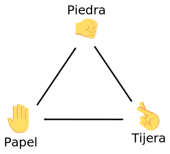

Estos ejercicios corresponden a lo explicado en las lecciones If ... elif ... else ... y Valores aleatorios.
Se pueden consultar unas posibles soluciones.
Escriba un programa que simule un juego en el que dos jugadores (Álvaro y Bárbara) tiran un dado. El que saque el valor más alto, gana. Si la puntuación coincide, empatan.
JUEGO DE DADOS (1) Alberto ha sacado un 4. Bárbara ha sacado un 4. Han empatado.
JUEGO DE DADOS (1) Alberto ha sacado un 4. Bárbara ha sacado un 6. Ha ganado Bárbara.
JUEGO DE DADOS (1) Alberto ha sacado un 3. Bárbara ha sacado un 1. Ha ganado Alberto.
Escriba un programa que simule un juego en el que dos jugadores (Carmen y David) tiran dos dados. El que saque mayor puntuación total, gana. Si la puntuación total coincide, gana quien haya sacado el dado con el valor más alto. Si el valor más alto también coincide, empatan.
JUEGO DE DADOS (2) Carmen ha sacado un 4 y un 4. David ha sacado un 1 y un 5. Ha ganado Carmen.
JUEGO DE DADOS (2) Carmen ha sacado un 2 y un 4. David ha sacado un 1 y un 5. Ha ganado David.
JUEGO DE DADOS (2) Carmen ha sacado un 3 y un 5. David ha sacado un 5 y un 3. Han empatado.
Escriba un programa que simule un juego en el que dos jugadores (Elena y Fernando) tiran dos dados. El que saque el valor más alto, gana. Si el valor más alto coincide, decide el otro dado. Si también coincide, empatan.
JUEGO DE DADOS (3) Elena ha sacado un 2 y un 5. Fernando ha sacado un 4 y un 4. Ha ganado Elena.
JUEGO DE DADOS (3) Elena ha sacado un 2 y un 4. Fernando ha sacado un 3 y un 4. Ha ganado Fernando.
JUEGO DE DADOS (3) Elena ha sacado un 1 y un 6. Fernando ha sacado un 6 y un 1. Han empatado.
Escriba un programa que simule un juego en el que dos jugadores (Gloria y Héctor) sacan tres cartas al azar del 1 al 10. Gana el jugador que obtenga la mayor puntuación total, siempre que no se pase de quince, en cuyo caso el jugador pierde.
JUEGO DEL QUINCE Gloria ha sacado un 1, un 4 y un 8. Héctor ha sacado un 8, un 2 y un 3. Han empatado.
JUEGO DEL QUINCE Gloria ha sacado un 8, un 2 y un 1. Héctor ha sacado un 8, un 7 y un 2. Ha ganado Gloria.
JUEGO DEL QUINCE Gloria ha sacado un 3, un 9 y un 5. Héctor ha sacado un 8, un 2 y un 6. No ha ganado nadie.
JUEGO DEL QUINCE Gloria ha sacado un 7, un 1 y un 1. Héctor ha sacado un 4, un 1 y un 8. Ha ganado Héctor.
Escriba un programa que simule el juego Piedra, papel, tijera para dos jugadores (Inés y Juan).
Las reglas del juego son las siguientes:
Resuelva este ejercicio utilizando la función random.randrange(), de manera que el valor 1 corresponda a Piedra, el valor 2 corresponda a papel y el valor 3 corresponda a Tijera.
PIEDRA, PAPEL, ... ¡TIJERA! Inés ha sacado piedra. Juan ha sacado papel. Ha ganado Juan.
PIEDRA, PAPEL, ... ¡TIJERA! Inés ha sacado tijera. Juan ha sacado tijera. Han empatado.
Resuelva este ejercicio utilizando la función random.choice(), de manera que se seleccione un valor entre "piedra", "papel" y "tijera".
Amplíe el programa anterior para que juegue a Piedra, papel, tijera, lagarto, Spock, una variante inventada por Sam Kass y que se popularizó al aparecer en la serie de television The Big Bang Theory. Esta variante añade dos elementos más, con la ventaja de que no se producen tantos empates, pero obliga a memorizar más combinaciones.
El dibujo de la derecha muestra los posibles resultados del juego. La punta de la flecha señala al derrotado.